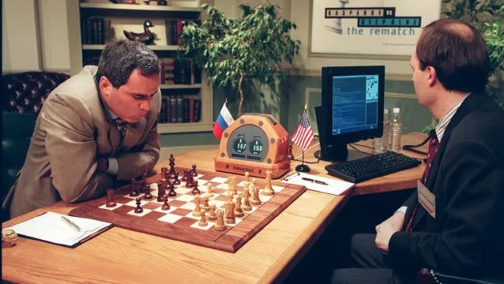

Ma crainte face aux intelligences artificielles
Quelque chose qui me pose problème avec les nouvelles technologies ce sont les IA, certe pour le moment les IA ne sont pas très développées et ne sont absolument pas dangereuses mais je ne peux pas m'empêcher de penser à :
Que se passerait-il si on perdait le contrôle des IA et qu'elles développent une consience, puis qu'elles finissent par nous faire la guerre ?
Garry Kasparov face à Deep Blue
Je me pose cette question depuis que j'ai vu la vidéo de 1997 qui oppose Gary Kasparov, champion du monde d'échec de 1985 à 2000 face à Deep Blue une intelligence artificielle conçu par IBM, qui a été soldé par la victoire de Deep Blue.
Photo de Garry Kasparov face à Deep Blue
Ce qui m'a choqué dans la vidéo c'est le fait de me dire qu'un humain a été vaincu par une machine et ce n'était qu'en 1997. J'avais vu cette vidéo lorsque j'étais au lycée en seconde et je me suis dit que depuis 1997 les machines ont énormément évoluer. Et évolueront encore plus dans les prochaines années et seront capable de faire des choses encore plus impensable et incroyable que de battre les humains aux échecs.
De l'admiration à la peur
Après avoir regardé la vidéo j'ai commencé à m'intéresser un petit peu plus aux IA et au début je trouvais ça fascinant, tout leur fonctionnement et la façon dont elles étaient développées. Puis petit à petit je n'ai pu m'empêcher d'imaginer des scénarios qui virent aux drames, j'ai donc vite arrêté de me faire des scénarios et de m'intéresser aux IA, car je ne les voyais plus de la même façon.
Puis il y a un film qui est sorti en début 2022 qui se nomme MOONFALL,
Affiche du film Moonfall
Je ne vais pas trop rentrer dans les détails pour ne pas essayer de spoil, mais ce film parle d'une civilisation humaine qui était très avancée technologiquement et qui avait mit en place des IA pour les servir et les aider dans leurs tâches du quotidien, mais cette IA a fini par développer une consience et à tuées tous les humains.
En sortant de la salle je me suis dit qu'il y a peut de chance que cela arrive. Mais avec l'arrivée du Metaverse et les envies d'Elon Musk de sortir des robots humanoïdes. Je ne peux pas m'enlever cette idée de la tête et me dire : sommes-nous réellement prêts à nous lancer dans ce nouveau monde ?